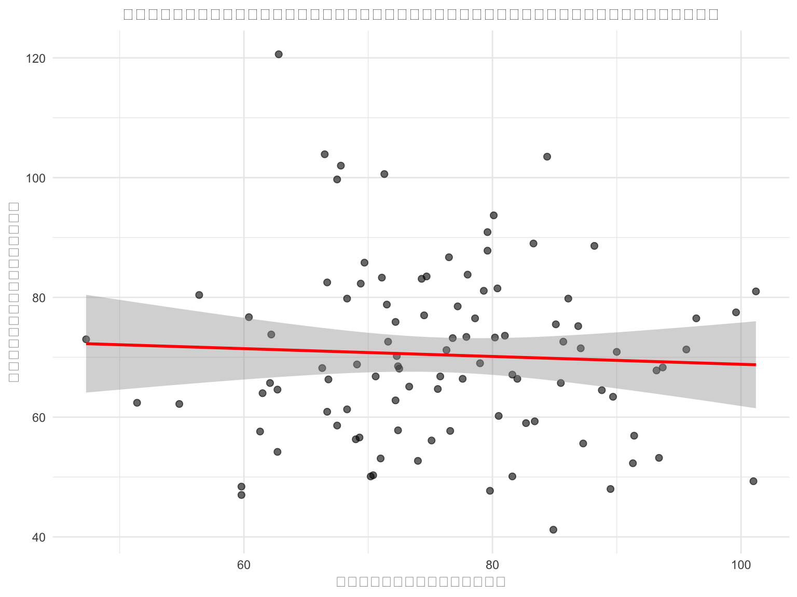

# โหลดไลบรารีที่จำเป็น
library(tidyverse)
library(ggplot2)
library(dplyr)
# สร้างข้อมูลตัวอย่างคะแนนสอบ
set.seed(123)
student_data <- data.frame(
student_id = 1:100,
class = rep(c("A", "B", "C"), length.out = 100),
math_score = round(rnorm(100, mean = 75, sd = 12), 1),
science_score = round(rnorm(100, mean = 72, sd = 15), 1),
english_score = round(rnorm(100, mean = 78, sd = 10), 1)
)
# ดูข้อมูลตัวอย่างแรก 6 แถว
head(student_data)บทนำ
ในบทความนี้ เราจะเรียนรู้วิธีการวิเคราะห์ข้อมูลคะแนนสอบของนักเรียนโดยใช้ภาษา R ซึ่งเป็นเครื่องมือที่ทรงพลังสำหรับการวิเคราะห์ข้อมูลทางการศึกษา
สิ่งที่จะได้เรียนรู้
- การโหลดและตรวจสอบข้อมูล
- การสร้างกราฟแสดงการกระจายของคะแนน
- การคำนวณสถิติเชิงพรรณนา
- การเปรียบเทียบคะแนนระหว่างกลุ่ม
การเตรียมข้อมูล
เริ่มต้นด้วยการโหลดไลบรารีที่จำเป็นและสร้างข้อมูลตัวอย่าง:
การสำรวจข้อมูลเบื้องต้น
ลองดูข้อมูลภาพรวมของชุดข้อมูล:
# ดูโครงสร้างของข้อมูล
str(student_data)'data.frame': 100 obs. of 5 variables:
$ student_id : int 1 2 3 4 5 6 7 8 9 10 ...
$ class : chr "A" "B" "C" "A" ...
$ math_score : num 68.3 72.2 93.7 75.8 76.6 95.6 80.5 59.8 66.8 69.7 ...
$ science_score: num 61.3 75.9 68.3 66.8 57.7 71.3 60.2 47 66.3 85.8 ...
$ english_score: num 100 91.1 75.3 83.4 73.9 73.2 70.1 72.1 94.5 77.5 ...# สถิติเชิงพรรณนาเบื้องต้น
summary(student_data[, c("math_score", "science_score", "english_score")]) math_score science_score english_score
Min. : 47.30 Min. : 41.20 Min. : 60.40
1st Qu.: 69.08 1st Qu.: 59.98 1st Qu.: 72.70
Median : 75.70 Median : 68.65 Median : 78.35
Mean : 76.09 Mean : 70.39 Mean : 79.20
3rd Qu.: 83.33 3rd Qu.: 79.05 3rd Qu.: 85.67
Max. :101.20 Max. :120.60 Max. :100.90 การสร้างกราฟแสดงการกระจายของคะแนน
Histogram แสดงการกระจายคะแนนคณิตศาสตร์
ggplot(student_data, aes(x = math_score)) +
geom_histogram(bins = 20, fill = "skyblue", color = "black", alpha = 0.7) +
labs(
title = "การกระจายของคะแนนคณิตศาสตร์",
x = "คะแนนคณิตศาสตร์",
y = "จำนวนนักเรียน"
) +
theme_minimal() +
theme(
plot.title = element_text(hjust = 0.5, size = 14),
axis.title = element_text(size = 12)
)Box Plot เปรียบเทียบคะแนนระหว่างห้อง
ggplot(student_data, aes(x = class, y = math_score, fill = class)) +
geom_boxplot(alpha = 0.7) +
labs(
title = "เปรียบเทียบคะแนนคณิตศาสตร์ระหว่างห้องเรียน",
x = "ห้องเรียน",
y = "คะแนนคณิตศาสตร์"
) +
theme_minimal() +
theme(
plot.title = element_text(hjust = 0.5, size = 14),
legend.position = "none"
) +
scale_fill_brewer(palette = "Set2")การคำนวณสถิติเชิงพรรณนา
สถิติแยกตามห้องเรียน
# คำนวณสถิติเชิงพรรณนาแยกตามห้อง
class_stats <- student_data %>%
group_by(class) %>%
summarise(
n = n(),
math_mean = round(mean(math_score), 2),
math_sd = round(sd(math_score), 2),
math_min = min(math_score),
math_max = max(math_score),
.groups = 'drop'
)
print(class_stats)# A tibble: 3 × 6
class n math_mean math_sd math_min math_max
<chr> <int> <dbl> <dbl> <dbl> <dbl>
1 A 34 77.9 10.2 59.8 101.
2 B 33 74.7 10.5 54.8 101
3 C 33 75.6 12.2 47.3 95.6Correlation Matrix ระหว่างวิชา
# สร้าง correlation matrix
score_cols <- c("math_score", "science_score", "english_score")
cor_matrix <- cor(student_data[score_cols])
print("ความสัมพันธ์ระหว่างคะแนนแต่ละวิชา:")[1] "ความสัมพันธ์ระหว่างคะแนนแต่ละวิชา:"round(cor_matrix, 3) math_score science_score english_score
math_score 1.000 -0.049 -0.13
science_score -0.049 1.000 0.03
english_score -0.130 0.030 1.00Scatter Plot แสดงความสัมพันธ์
ggplot(student_data, aes(x = math_score, y = science_score)) +
geom_point(alpha = 0.6, size = 2) +
geom_smooth(method = "lm", se = TRUE, color = "red") +
labs(
title = "ความสัมพันธ์ระหว่างคะแนนคณิตศาสตร์และวิทยาศาสตร์",
x = "คะแนนคณิตศาสตร์",
y = "คะแนนวิทยาศาสตร์"
) +
theme_minimal() +
theme(plot.title = element_text(hjust = 0.5, size = 12))`geom_smooth()` using formula = 'y ~ x'
สรุปผลการวิเคราะห์
จากการวิเคราะห์ข้อมูลคะแนนสอบ เราพบว่า:
- การกระจายของคะแนน: คะแนนคณิตศาสตร์มีการกระจายแบบ Normal Distribution
- ความแตกต่างระหว่างห้อง: ห้องเรียนต่างๆ มีคะแนนเฉลี่ยไม่แตกต่างกันมาก
- ความสัมพันธ์: พบความสัมพันธ์เชิงบวกระหว่างคะแนนคณิตศาสตร์และวิทยาศาสตร์
การประยุกต์ใช้
การวิเคราะห์แบบนี้สามารถนำไปใช้ใน:
- การประเมินผลการเรียนการสอน - ดูประสิทธิภาพของการสอนในแต่ละห้อง
- การวางแผนการสอนแก้ไข - ระบุนักเรียนที่ต้องการความช่วยเหลือเพิ่มเติม
- การพัฒนาหลักสูตร - ปรับปรุงเนื้อหาตามผลการวิเคราะห์
บทความนี้เป็นส่วนหนึ่งของชุดเนื้อหาการเรียนรู้ R เพื่อการวิเคราะห์ข้อมูลทางการศึกษา หากมีคำถามสามารถสอบถามได้ที่ GitHub Issues